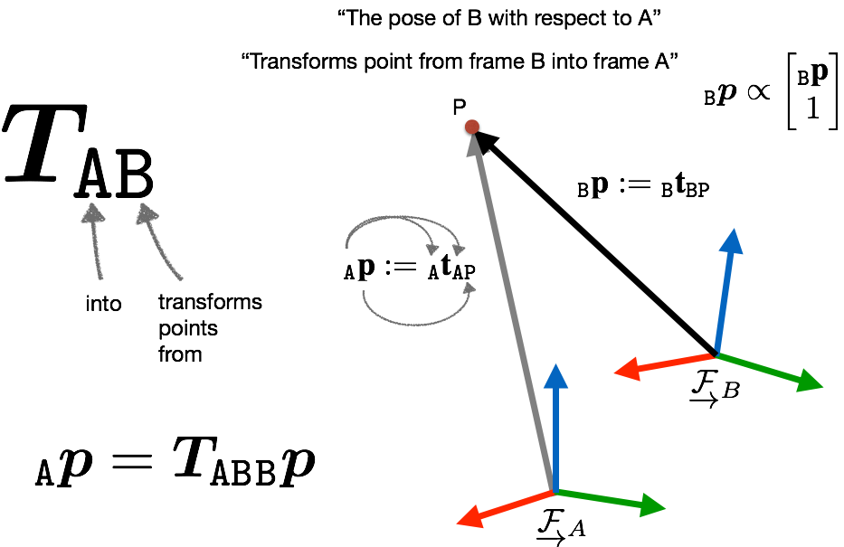
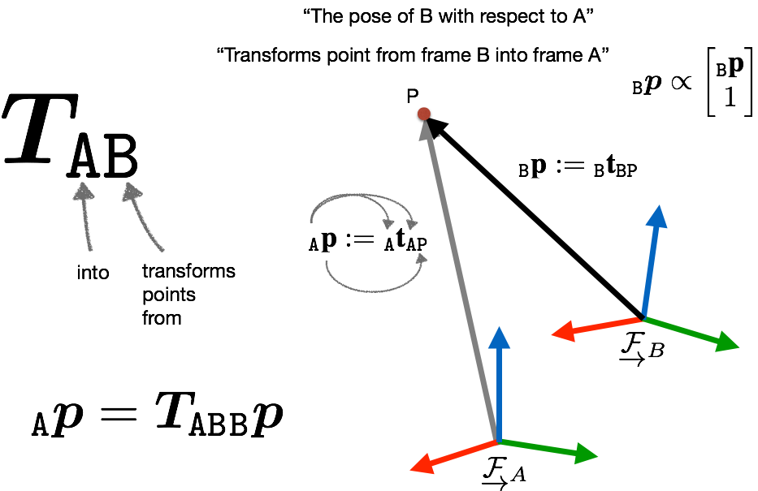

Computer Vision Fundamentals
Point on Line
\Transpose{\Vec{x}} \Vec{l} = 0
Intersection of Lines
\begin{aligned}
\Vec{l} (\Vec{l} \times \Vec{l}') \Vec{l}' (\Vec{l} \times \Vec{l}') &= 0 \\
\Transpose{\Vec{l}} \Vec{x} = \Transpose{\Vec{l}}' \Vec{x} &= 0 \\
\Vec{x} &= \Vec{l} \times \Vec{l}'
\end{aligned}
Plane
- A plane can be defined by the join between three points, or the join
between a line and a point in general
- Two planes intersecting a unique line
- Three planes intersecting a unique point
Three Points Define a Plane
Suppose you have three points $\Vec{p}_{1}$, $\Vec{p}_{2}$, $\Vec{p}_{3}$,
and are incident with a plane, $\boldsymbol{\pi}$ then each point satisfies
\Transpose{\boldsymbol{\pi}} \Vec{p}_{i} = 0.
By stacking each point as a matrix
\begin{aligned}
\begin{bmatrix}
\Transpose{\Vec{p}_{1}} \\
\Transpose{\Vec{p}_{2}} \\
\Transpose{\Vec{p}_{3}}
\end{bmatrix} \boldsymbol{\pi} = 0
\end{aligned}
Since three points in general are rarely linearly independent, it follows that
the $3 \times 4$ matrix compsed of the points $\Vec{p}_{i}$ as rows has rank
3.
Pinhole Camera Model
The pinhole camera model describes how 3D scene points are projected onto
the 2D image plane of an ideal pinhole camera. The model makes the assumption
that light rays emitted from an object in the scene pass through the pinhole of
the camera, and projected onto the image plane.
A 3D point $\Vec{p}_{C} = [p_x \quad p_y \quad p_z]^{\transpose}$ expressed
in the camera frame, $\frame_{C}$, projected on to the camera's 2D image plane
$(u, v)$ is written as,
u = \dfrac{p_x f_{x}}{p_z} + c_x \quad v = \dfrac{p_y f_{y}}{p_z} + c_y
where $f_{x}$ and $f_{y}$ denote the focal lengths, $c_{x}$ and $c_{y}$
represents the principal point offset in the $x$ and $y$ direction. Or, in
matrix form
\Vec{x}_{C} = \Mat{K} \Vec{p}_{C} \\
\begin{bmatrix}
u \\ v \\ 1
\end{bmatrix} =
\begin{bmatrix}
f_{x} & 0 & c_{x} \\
0 & f_{x} & c_{y} \\
0 & 0 & 1
\end{bmatrix}
\begin{bmatrix}
p_x / p_z \\ p_y / p_z \\ 1
\end{bmatrix}
In practice, the pinhole camera model only serves as an approximation to
modern cameras. The assumptions made in the model are often violated with
factors such as large camera apertures (pinhole size), distortion effects in
camera lenses, and other factors. That is why the pinhole camera model is often
used in combination with a distortion model in the hope of minimizing
projection errors from 3D to 2D.
Common distortion models used in conjuction with the pinhole camera model
includes:
Guessing the focal length from the camera's field of view
Using basic trigonometry, if we know the len's field of views we can obtain the
focal length in the $x$ and/or $y$ direction.
Radial Tangential Distortion
Lens distortion generally exist in all camera lenses, therefore it is vital
we model the distortions observed. The most common distortion model is the
radial-tangential (or simply as radtan) distortion model. The two main
distortion components, as the name suggests, are the radial and tangential
distortion.
Radial distortion occurs due to the shape of the lens, where light passing
through the center undergoes no refraction, and light passing through the edges
of the lens, undergoes through severe bending causing the radial
distortion.

Tangential distortion, on the other hand, is mainly due to camera sensor
misalignment during the manufacturing process. It occurs when the camera sensor
is not in parallel with the lens.

The combined radial-tangential distortion is modelled using a polynomial
approximation with parameters $k_{1}, k_{2}$ and $p_{1}, p_{2}$ respectively.
To apply the distortion the observed 3D point $\Vec{p} = [x \enspace y \enspace
z]^{\transpose}$ is first projected, distorted, and finally scaled and offset
in the image plane $(u, v)$.
\begin{aligned}
x &= X / Z \\
y &= Y / Z \\
r^2 &= x^2 + y^2 \\ \\
x' &= x \cdot (1 + (k_1 r^2) + (k_2 r^4)) \\
y' &= y \cdot (1 + (k_1 r^2) + (k_2 r^4)) \\
x'' &= x' + (2 p_1 x y + p_2 (r^2 + 2 x^2)) \\
y'' &= y' + (p_1 (r^2 + 2 y^2) + 2 p_2 x y)
\end{aligned}
Radial Tangential Point Jacobian
\begin{aligned}
\dfrac{\partial{\Vec{d}_{\text{radtan}}}}{\partial{\Vec{p}_{C}}} &=
\begin{bmatrix}
J_{11} & J_{12} \\
J_{21} & J_{22}
\end{bmatrix} \\ \\
r^2 &= x^2 + y^2 \\ \\
J_{11} &= k_1 r^2 + k_2 r^4 + 2 p_1 y + 6 p_2 x
+ x (2 k_1 x + 4 k_2 x r^2) + 1 \\
J_{12} &= 2 x p_1 + 2 y p_2 + y (2 k_1 x + 4 k_2 x r^2) \\
J_{21} &= 2 x p_1 + 2 y p_2 + y (2 k_1 x + 4 k_2 x r^2) \\
J_{22} &= k_1 r^2 + k_2 r^4 + 6 p_1 y + 2 p_2 x
+ y (2 k_1 y + 4 k_2 y r^2) + 1
\end{aligned}
Radial Tangential Parameter Jacobian
\begin{aligned}
\dfrac{\partial{\Vec{d}_{\text{radtan}}}}{\partial{\Vec{d}_{\text{params}}}} &=
\begin{bmatrix}
J_{11} & J_{12} & J_{13} & J_{14} \\
J_{21} & J_{22} & J_{23} & J_{24}
\end{bmatrix} \\ \\
r^2 &= x^2 + y^2 \\ \\
J_{11} &= x r^2 \\
J_{12} &= x r^4 \\
J_{13} &= 2 x y \\
J_{14} &= 3 x^2 + y^2 \\ \\
J_{21} &= y r^2 \\
J_{22} &= y r^4 \\
J_{23} &= x^2 + 3 y^2 \\
J_{24} &= 2 x y
\end{aligned}
Equi-distant Distortion
\begin{aligned}
r &= \sqrt{x^{2} + y^{2}} \\
\theta &= \arctan{(r)} \\
\theta_d &= \theta (1 + k_1 \theta^2 + k_2 \theta^4
+ k_3 \theta^6 + k_4 \theta^8) \\
x' &= (\theta_d / r) \cdot x \\
y' &= (\theta_d / r) \cdot y
\end{aligned}
Equi-distant Point Jacobian
\begin{aligned}
\dfrac{\partial{\Vec{d}_{\text{equi}}}}{\partial{\Vec{p}_{C}}} &=
\begin{bmatrix}
J_{11} & J_{12} \\
J_{21} & J_{22}
\end{bmatrix} \\ \\
%
r &= \sqrt{x^{2} + y^{2}} \\
\theta &= \arctan(r) \\
\theta_d &= \theta (1 + k_1 \theta^2 + k_2 \theta^4
+ k_3 \theta^6 + k_4 \theta^8) \\
\theta_d' &= 1 + 3 k_1 \theta^2 + 5 k_2 \theta^4
+ 7 k_3 \theta^6 + 9 k_4 \theta^8 \\
\theta_r &= 1 / (r^2 + 1) \\ \\
%
s &= \theta_d / r \\
s_r &= \theta_d' \theta_r / r - \theta_d / r^2 \\ \\
%
r_x &= 1 / r x \\
r_y &= 1 / r y \\ \\
%
J_{11} &= s + x s_r r_x \\
J_{12} &= x s_r r_y \\
J_{21} &= y s_r r_x \\
J_{22} &= s + y s_r r_y
\end{aligned}
Equi-distant Parameter Jacobian
\begin{aligned}
\dfrac{\partial{\Vec{d}_{\text{equi}}}}
{\partial{\Vec{d}_{\text{params}}}} &=
\begin{bmatrix}
J_{11} & J_{12} & J_{13} & J_{14} \\
J_{21} & J_{22} & J_{23} & J_{24}
\end{bmatrix} \\ \\
r &= \sqrt{x^{2} + y^{2}} \\
\theta &= \arctan(r) \\ \\
J_{11} &= x \theta^3 / r \\
J_{12} &= x \theta^5 / r \\
J_{13} &= x \theta^7 / r \\
J_{14} &= x \theta^9 / r \\ \\
J_{21} &= y \theta^3 / r \\
J_{22} &= y \theta^5 / r \\
J_{23} &= y \theta^7 / r \\
J_{24} &= y \theta^9 / r
\end{aligned}
Linear Triangulation
There are various methods for triangulating a 3D point obeserved from at
least two camera views. The linear triangulation method [Hartley2003] is
frequently used. This method assumes a pair of homogeneous pixel measurements
$\Vec{z}$ and $\Vec{z}' \in \real^{3}$ that observes the same 3D point,
$\Vec{X} \in \real^{4}$, in homogeneous coordinates from two different camera
frames. The homogeneous projection from 3D to 2D with a known camera matrix
$\Mat{P} \in \real^{3 \times 4}$ for each measurement is given as,
\begin{aligned}
\Vec{z} &= \mathbf{P} \mathbf{X} \\
\Vec{z}' &= \mathbf{P}' \mathbf{X}.
\end{aligned}
These equations can be combined to form a system of equations of the form
$\Mat{A} \Vec{x} = \Vec{0}$. To eliminate the homogeneous scale factor we apply
a cross product to give three equations for each image point, for example
$\Vec{z} \times (\Mat{P} \Mat{X}) = \Vec{0}$ writing this out gives
\begin{aligned}
x (\Vec{p}^{3T} \Vec{X}) - (\Vec{p}^{1T} \Vec{X}) = 0 \\
y (\Vec{p}^{3T} \Vec{X}) - (\Vec{p}^{2T} \Vec{X}) = 0 \\
x (\Vec{p}^{2T} \Vec{X}) - y (\Vec{p}^{1T} \Vec{X}) = 0
\end{aligned}
where $\Vec{p}^{iT}$ is the $i^{\text{th}}$ row of $\Vec{P}$.
From , an equation of the form
$\Mat{A} \Vec{x} = \Vec{0}$ for each image point can be formed, where
$\Vec{x}$ represents the unknown homogeneous feature location to be
estimated, and $\Mat{A}$ is given as
\begin{aligned}
\mathbf{A} =
\begin{bmatrix}
x (\Vec{p}^{3T}) - (\Vec{p}^{1T}) \\
y (\Vec{p}^{3T}) - (\Vec{p}^{2T}) \\
x' (\Vec{p'}^{3T}) - (\Vec{p'}^{1T}) \\
y' (\Vec{p'}^{3T}) - (\Vec{p'}^{2T})
\end{bmatrix}
\end{aligned}
giving a total of four equations in four homogeneous unknowns. Solving for
$\Vec{A}$ using SVD allows us to estimate the initial feature location.
In an ideal world, the position of 3D points can be solved as a system of
equations using the linear triangulation method. In reality, however, errors
are present in the camera poses and pixel measurements. The pixel measurements
observing the same 3D point are generally noisy. In addition, the camera models
and distortion models used often do not model the camera projection or
distortion observed perfectly. Therefore to obtain the best results an
iterative method should be used. This problem is generally formulated as a
non-linear least square problem and can be solved by numerical methods, such as
the Gauss-Newton algorithm.
References
[Hartley2003]: Hartley, Richard, and Andrew Zisserman. Multiple view geometry
in computer vision. Cambridge university press, 2003.
Illumination Invariant Transform
Robust fast AprilTag detection emerged from experience with the standard
black and white AprilTag during outdoor experiments, where the detection
becomes unreliable in certain lighting conditions. In particular, detection
fails when strong shadows cover tag features fully or partially. The cause of
failure is due to how the detection process relies on image gradients to detect
the edges and lines of the tag in order to extract the relative tag pose.
Depending on the time of day or weather conditions, this can have a significant
impact on reliable AprilTag detection. This sensitivity to illumination was
addressed by using the illumination invariant transform by [Maddern2014].
The illumination invariant transform takes three input channels from the
image, and returns a single illumination adjusted channel, $I$, as follows,
I = \log(R_{2}) - \alpha \log(R_{1}) - (1 - \alpha) \log(R_{3})
where $R_{1}, R_{2}, R_{3}$ are sensor responses (or image channels)
corresponding to peak sensitivities at ordered wavelengths $\lambda_{1} <
\lambda_{2} < \lambda_{3}$, and $\alpha$ is determined by the following
equations,
\begin{aligned}
\dfrac{1}{\lambda_{2}} &=
\dfrac{\alpha}{\lambda_{1}}
+ \dfrac{\left(1 - \alpha \right)}{\lambda_{3}} \\
\alpha &= \dfrac{\lambda_{1} (\lambda_{2} - \lambda_{3})}
{\lambda_{2} (\lambda_{1} - \lambda_{3})}
\end{aligned}
This transform, however, has a non-intuitive effect on black and white
targets, as the three channels tend to be equally over and under exposed in RGB
images. As a result, the transform leads to similar values for white and black
pixels, eliminating the ability for the AprilTag library to detect edges. To
resolve this issue, we designed a new AprilTag so that the single channel image
produced by using the equation introduced above produces a grey scale like
image that is robust to shadows and changes in illumination. Examining
\eqref{eq:illlum_invar}, it can be observed the resulting pixel intensities are
maximized when the camera observes green ($R_{2}$) and minimized when viewing a
mixture of red and blue, ($R_{1}$ and $R_{3}$ respectively). The proposed
illumination invariant AprilTag shown in is created by replacing the white and
black portions of a typical AprilTag with green and magenta. This modification
was tested under various lighting conditions.
Fig.~\ref{fig:illum_invar_comparision} shows the tag's appearance after
performing the illumination invariant transform, creating a single channel
image that replaces the typical single channel, grey scale image that is
typically used by the AprilTag library. The images shown in
Fig.~\ref{fig:illum_invar_comparision} are taken using a PointGrey Chameleon3
(CM3-U3-28S4C-CS) with a Sony ICX818 image sensor. The corresponding values of
$\lambda_{1},\lambda_{2}, \lambda_{3}$ and $\alpha $ are 480 nm, 510 nm, 640 nm
and 0.56 respectively as noted in the sensor data sheets.
References
[Maddern2014]: Maddern, Will, et al. "Illumination invariant imaging:
Applications in robust vision-based localisation, mapping and classification
for autonomous vehicles." Proceedings of the Visual Place Recognition in
Changing Environments Workshop, IEEE International Conference on Robotics and
Automation (ICRA), Hong Kong, China. Vol. 2. 2014.
Optical Flow
Optical flow estimates the velocity of each image feature in successive
images of a scene. It makes the following explicit assumptions:
- Pixel intensity does not change between consecutive frames
- Displacement of features is small
- Features are within the same local neighbourhood
Let us consider a pixel, $p$, in the first frame which has an intensity, $I(x,
y, t)$, where it is a function of the pixel location, $x$ and $y$, and time,
$t$. If we apply the aforementioned assumptions, we can say that the intensity
of said pixel in the first frame to the second does not change. Additionally,
if there was a small displacement, $dx$ and $dy$, and small time difference,
$dt$, between images this can be written in mathematical form as,
I(x, y, t) = I(x + dx, y + dy, t + dt).
This is known as the brightness constancy equation. To obtain the image
gradient and velocity of the pixel, we can use Taylor series approximation of
right-hand side of \eqref{eq:brightness_constancy} to get,
I(x + dx, y + dy, t + dt) = I(x, y, t)
+ \dfrac{\partial{I}}{\partial{x}} dx
+ \dfrac{\partial{I}}{\partial{y}} dy
+ \dfrac{\partial{I}}{\partial{t}} dt
+ \text{H.O.T},
removing common terms and dividing by $dt$ we get,
I_{x} v_{x} + I_{y} v_y + I_{t} = 0
or,
I_{x} v_{x} + I_{y} v_y = -I_{t}
where:
\begin{aligned}
I_{x} = \dfrac{\partial I}{\partial x}
; \quad
I_{y} = \dfrac{\partial I}{\partial y} \\
v_{x} = \dfrac{dx}{dt}
; \quad
v_y = \dfrac{dy}{dt}.
\end{aligned}
The image gradients along the x and y directions are $I_{x}$ and $I_{y}$, where
$I_{t}$ is the image gradient along time, finally, $v_{x}$ and $v_{y}$ are the
pixel velocity in $x$ and $y$ directions, which is unknown. The problem with
\eqref{eq:optical_flow_2} is that it provides a single constraint with two
degrees of freedom, and as such requires at least one additional constraint to
identify a solution.
The Lucas-Kanade method solves the aperture problem by introducing additional
conditions. This method assumes all pixels within a window centered around a
pixel $p$ will have similar motion, and that the window size is configurable.
For example, a window size of $3 \times 3$ around the pixel $p$, the $9$ points
within the window should have a similar motion. Using
\eqref{eq:optical_flow_2}, the intensity inside the window must therefore
satisfy,
\begin{aligned}
I_{x}(p_1) v_{x}(p_1) &+ I_{y}(p_1) v_y = -I_{t}(p_1) \\
I_{x}(p_1) v_{x}(p_2) &+ I_{y}(p_2) v_y = -I_{t}(p_2) \\
& \enspace \vdots \\
I_{x}(p_1) v_{x}(p_n) &+ I_{y}(p_n) v_y = -I_{t}(p_n)
\end{aligned}
where $p_{1}, p_{2} ,\dots , p_{n}$ are the pixels in the window. This can be
re-written in matrix form $\mathbf{A} \mathbf{x} = \mathbf{b}$ as,
\mathbf{A} = \begin{bmatrix}
I_{x}(p_{1}) & I_{y}(p_{1}) \\
I_{x}(p_{2}) & I_{y}(p_{2}) \\
\vdots & \vdots \\
I_{x}(p_{n}) & I_{y}(p_{n})
\end{bmatrix}
\quad
\mathbf{x} = \begin{bmatrix}
v_{x} \\ v_{y} \\
\end{bmatrix}
\quad
\mathbf{b} = \begin{bmatrix}
-I_{t}(p_{1}) \\
-I_{t}(p_{2}) \\
\vdots \\
-I_{t}(p_{n})
\end{bmatrix}.
The linear system of equations of \eqref{eq:lucas_kanade_1} is over-determined,
therefore there is no exact solution. To address this issue, a least squares
method can be used to approximate the solution by applying the ordinary least
squares. For the system $\mathbf{A} \mathbf{x} = \mathbf{b}$, the least squares
formula is obtained by minimizing the following,
\underset{\mathbf{x}}{\text{argmin }} || \mathbf{A} \mathbf{x} - \mathbf{b} ||,
the solution of which can be obtained by using *normal equations*,
\begin{aligned}
\mathbf{A}^{T} \mathbf{A} \mathbf{x} &= \mathbf{A}^{T} \mathbf{b} \\
\mathbf{x} &= (\mathbf{A}^{T} \mathbf{A})^{-1} \mathbf{A}^{T} \mathbf{b}.
\end{aligned}
Rewriting \eqref{eq:lucas_kanade_1} in the form of
\eqref{eq:normal_equations_2} we get,
\begin{bmatrix}
v_{x} \\ v_{y}
\end{bmatrix}
=
\begin{bmatrix}
\sum_{i}{I_{x}(p_{i})}^2 & \sum_{i}{I_{x}(p_{i}) I_{y}(p_{i}) } \\
\sum_{i}{I_{x}(p_{i}) I_{y}(p_{i})} & \sum_{i}{I_{y}(p_{i})}^2
\end{bmatrix}^{-1}
\begin{bmatrix}
- \sum_{i}{I_{x}(p_{i}) I_{t}(p_{i})} \\
- \sum_{i}{I_{y}(p_{i}) I_{t}(p_{i})}
\end{bmatrix}
which is finally used to obtain the optical flow of pixel $p$.
Notations
A large part of robotics is about developing machines that perceives and
interact with the environment. For that robots use sensors to collect and
process data, and knowing what the data describes is of important for the robot
to navigate and interact with the environment. The following notes will be
using the frame notation as described by Paul Furgale (see link). The aim is to mitigate the
ambiguity that arises when describing robot poses, sensor data and more.
A vector expressed in the world frame, $\frame_{W}$, is written as $\pos_{W}$.
Or more precisely if the vector describes the position of the camera frame,
$\frame_{C}$, expressed in $\frame_{W}$, the vector can be written as
$\pos_{WC}$. The left hand subscripts indicates the coordinate system the
vector is expressed in, while the right-hand subscripts indicate the start and
end points. For brevity if the vector has the same start point as the frame to
which it is expressed in, the same vector can be written as $\pos_{WC}$.
Similarly a transformation of a point from $\frame_{W}$ to $\frame_{C}$ can be
represented by a homogeneous transform matrix, $\tf_{WC}$, where its rotation
matrix component is written as $\rot_{WC}$ and the translation component
written as $\trans_{WC}$. A rotation matrix that is parametrized by quaternion
$\quat_{WC}$ is written as $\rot\{\quat_{WC}\}$.
\begin{aligned}
&\text{Position:} \enspace & \pos_{WB} \\
&\text{Velocity:} \enspace & \vel_{WB} \\
&\text{Acceleration:} \enspace & \acc_{WB} \\
&\text{Angular velocity:} \enspace & \angvel_{WB} \\
&\text{Rotation:} \enspace & \rot_{WB} \\
&\text{Transform:} \enspace & \tf_{WB} \\
\end{aligned}


 

Inertial Measurement Unit (IMU)
IMU Motion Model
\begin{aligned}
% Position
\dot\pos_{WS} &= \vel_{WS} \\
% Orientation
\dot\quat_{WS} &=
\dfrac{1}{2} \mathbf{\Omega}
(\gyrMeas, \gyrNoise, \gyrBias)
\quat_{WS} \\
% Velocity
\dot\vel_{WS} &=
\rot_{WS}
(\accMeas + \accNoise - \accBias) + \gravity \\
% Gyro Bias
\dot{\gyrBias} &= \noise_{\gyrBias} \\
% Accel Bias
\dot{\accBias} &= -\dfrac{1}{\tau} \accBias + \noise_{\gyrBias}
\end{aligned}
The matrix $\mathbf{\Omega}$ is formed from the estimated angular rate
$\gyr = \gyrMeas + \gyrNoise - \gyrBias$
Gauss Newton
\begin{aligned}
\min_{\Vec{x}} \cost(\Vec{x})
&=
\dfrac{1}{2}
\sum_{i}
\Vec{e}_{i}^{\transpose} \Mat{W} \Vec{e}_{i} \\
&=
\dfrac{1}{2} \enspace
\Vec{e}_{i}^{\transpose}(\Vec{x})
\Mat{W}
\Vec{e}_{i}(\Vec{x})
\end{aligned}
Since the error function, $\Vec{e}(\Vec{x})$, is non-linear, it is
approximated with the first-order Taylor series,
\Vec{e}(\Vec{x})
\approx
\Vec{e}(\bar{\Vec{x}}) +
\Mat{E}(\bar{\Vec{x}}) \Delta\Vec{x}
where $\Mat{E}(\bar{\Vec{x}}) = \dfrac{\delta\Vec{e}(\Vec{x})}{\delta\Vec{x}}
\bigg\rvert_{\Vec{x}_{k}}$ and $\Delta{\Vec{x}} = \Vec{x} - \bar{\Vec{x}}$.
\dfrac{\delta{\cost}}{\delta{\Vec{x}}} =
\dfrac{\delta{\cost}}{\delta{\Vec{e}}}
\dfrac{\delta{\Vec{e}}}{\delta{\Vec{x}}}
\begin{aligned}
\dfrac{\delta{\cost}}{\delta{\Vec{e}}} &=
\dfrac{1}{2} \Vec{e}^{\transpose}(\Vec{x}) \Mat{W} \Vec{e}(\Vec{x}) =
\Vec{e}^{\transpose}(\Vec{x}) \Mat{W} \\
%
\dfrac{\delta{\Vec{e}}}{\delta{\Vec{x}}} &=
\Vec{e}(\bar{\Vec{x}}) +
\Mat{E}(\bar{\Vec{x}}) \Delta\Vec{x} =
\Mat{E}(\bar{\Vec{x}})
\end{aligned}
\begin{aligned}
\dfrac{\delta{\cost}}{\delta{\Vec{x}}}
&=
(\Vec{e}^{\transpose}(\Vec{x}) \Mat{W}) (\Mat{E}(\bar{\Vec{x}})) \\
% Line 2
&=
(
\Vec{e}(\bar{\Vec{x}}) + \Mat{E}(\bar{\Vec{x}}) \Delta\Vec{x}
)^{\transpose} \Mat{W}
\Mat{E}(\bar{\Vec{x}}) \\
% Line 3
&=
\Vec{e}^{\transpose}(\bar{\Vec{x}}) \Mat{W} \Mat{E}(\bar{\Vec{x}})
+ \Delta\Vec{x}^{\transpose}
\Mat{E}(\bar{\Vec{x}})^{\transpose} \Mat{W} \Mat{E}(\bar{\Vec{x}})
= 0 \\
\end{aligned}
\begin{aligned}
% Line 4
\Delta\Vec{x}^{\transpose}
\Mat{E}(\bar{\Vec{x}})^{\transpose} \Mat{W} \Mat{E}(\bar{\Vec{x}})
&=
- \Vec{e}^{\transpose}(\bar{\Vec{x}}) \Mat{W} \Mat{E}(\bar{\Vec{x}}) \\
% Line 5
\underbrace{
\Mat{E}(\bar{\Vec{x}})^{\transpose} \Mat{W} \Mat{E}(\bar{\Vec{x}})
}_{\Mat{H}}
\Delta\Vec{x}
&=
\underbrace{
- \Mat{E}(\bar{\Vec{x}})^{\transpose} \Mat{W} \Vec{e}(\bar{\Vec{x}})
}_{\Vec{b}}
\end{aligned}
Solve the normal equations $\Mat{H}\Delta\Vec{x} = \Vec{b}$ for
$\Delta\Vec{x}$ using the Cholesky or QR-decompositon. Once $\Delta\Vec{x}$ is
found the best estimate $\bar{\Vec{x}}$ can be updated via,
\bar{\Vec{x}}_{k + 1} = \bar{\Vec{x}}_{k} + \Delta\Vec{x}.
Marginalization
Shur's Complement
But there are something happening
Let $\Mat{M}$ be a matrix that consists of block matrices $\Mat{A}$, $\Mat{B}$,
$\Mat{C}$, $\Mat{D}$,
\Mat{M} =
\begin{bmatrix}
\Mat{A} & \Mat{B} \\
\Mat{C} & \Mat{D}
\end{bmatrix}
if $\Mat{A}$ is invertible, the Schur's complement of the block $\Mat{A}$ of the
matrix $\Mat{B}$ is the defined by
\Mat{M}/\Mat{A} = \Mat{D} - \Mat{C} \Mat{A}^{-1} \Mat{B}.
\Mat{M}/\Mat{D} = \Mat{A} - \Mat{B} \Mat{D}^{-1} \Mat{C}.
---
Using Shur's Complement for marginalization
In a Gauss-Newton system,
\Mat{H} \delta\state = \Vec{b} ,
it so happens that Schur's complement can be used to both invert and
marginalize out the old states. First let $\state_\mu$ be the states to be
marginalized out, $\state_{\lambda}$ be the set of states related to those by
error terms, and $\state_{\rho}$ be the set of remaining states. Partitioning
the Hessian, error state and R.H.S of the Gauss-Newton system gives:
\begin{bmatrix}
\Mat{H}_{\mu\mu} & \Mat{H}_{\mu\lambda_{1}} \\
\Mat{H}_{\lambda_{1}\mu} & \Mat{H}_{\lambda_{1}\lambda_{1}}
\end{bmatrix}
\begin{bmatrix}
\delta\state_{\mu} \\
\delta\state_{\lambda}
\end{bmatrix}
=
\begin{bmatrix}
\Vec{b}_{\mu} \\
\Vec{b}_{\lambda}
\end{bmatrix}
and applying the Shur complement operation yields:
\begin{aligned}
\Mat{H}^{\ast}_{\lambda_{1}\lambda_{1}}
&=
\Mat{H}_{\lambda_{1}\lambda_{1}} -
\Mat{H}_{\lambda_{1}\mu}
\Mat{H}_{\mu\mu}^{-1}
\Mat{H}_{\mu\lambda_{1}}
\\
\Vec{b}^{\ast}_{\lambda_{1}}
&=
\Vec{b}_{\lambda_{1}} -
\Mat{H}_{\lambda_{1}\mu}
\Mat{H}_{\mu\mu}^{-1}
\Vec{b}_{\mu}
\end{aligned}
where $\Vec{b}^{\ast}_{\lambda_{1}}$ and
$\Mat{H}^{\ast}_{\lambda_{1}\lambda_{1}}$ are non-linear functions of
$\state_\lambda$ and $\state_\mu$.
The finite deviation $\Delta{\chi}= \Phi^{-1}(\log(\bar{\state} \boxplus
\state_{0}^{-1}))$ represents state updates that occur after marginalization,
where $\bar{\state}$ is our current estimate for $\state$. Introducing and
approximating the R.H.S of the Gauss-Newton equation with $\Delta{\chi}$ and
the first order Taylor series results in,
\Vec{b} + \dfrac{\delta{b}}{\delta{\Delta{\chi}}} \bigg\rvert_{\state_{0}}
= \Vec{b} - \Mat{H} \Delta{\chi}.
Partioning \eqref{eq:gn_rhs_v2} into $\mu$ and $\lambda$,
\begin{bmatrix}
\Vec{b}_{\mu} \\ \Vec{b}_{\lambda_{1}}
\end{bmatrix}
=
\begin{bmatrix}
\Vec{b}_{\mu, 0} \\ \Vec{b}_{\lambda_{1}, 0}
\end{bmatrix}
-
\begin{bmatrix}
\Mat{H}_{\mu\mu} & \Mat{H}_{\mu\lambda_{1}} \\
\Mat{H}_{\lambda_{1}\mu} & \Mat{H}_{\lambda_{1}\lambda_{1}}
\end{bmatrix}
\begin{bmatrix}
\Delta{\chi}_{\mu} \\
\Delta{\chi}_{\lambda_{1}}
\end{bmatrix}.
Substituting in the above to the R.H.S of the Gauss-Newton system, $\Mat{H}
\delta{\state} = \Vec{b}$, results in,
\Vec{b}^{\ast}_{\lambda_{1}} =
\underbrace{
\Vec{b}_{\lambda_{1}, 0} -
\Mat{H}_{\lambda_{1}\mu}
\Mat{H}_{\mu\mu}^{-1}
\Vec{b}_{\mu, 0}
}_{\Vec{b}^{\ast}_{\lambda_{1}, 0}}
-
\Mat{H}^{\ast}_{\lambda_{1}\lambda_{1}}
\Delta{\chi}_{\lambda_{1}}.
---
Let us consider the following scenario. A state vector, $\state$, during the
time interval $[0, k]$ will contain $m$ old states to be marginalized out and
$r$ remain states which we wish to keep. i.e. $\state =
[\state_{m}^{\transpose} \quad \state_{r}^{\transpose}]^{\transpose}$. Then the
cost function, $c(\cdot)$, can be written as a function of $\state$ at time $k$
as,
\begin{aligned}
c(\state_{k}) &= c(\state_{m}, \state_{r}) \\
&= c(\state_{m}) + c(\state_{r}).
\end{aligned}
The intuition behind \eqref{eq:ba_cost_fn} is since the state at time $k$ can
be partitioned into $m$ and $r$, the cost can also be decomposed. Utilizing
this property, the multi-variate optimization can also be decomposed as
follows,
\begin{aligned}
\min_{\state_{m}, \state_{r}} c(\state_{m}, \state_{r})
&= \min_{\state_{r}} (\min_{\state_{m}} c(\state_{m}, \state_{r})) \\
&= \min_{\state_{r}} (c(\state_{r}) + \min_{\state_{m}} c(\state_{m})) .
\end{aligned}
The equation above shows the minimization problem can be solved by first
optimizing for the states $\state_{m}$, and then forming a prior towards the
problem of solving for $\state_{r}$. The reformulation of the minimization
problem entails no approximation.
The Gauss Newton system for solving the minimization problem is,
\Mat{H} \Delta{\state} = \Vec{b}.
Partitioning the $\Mat{H}$ matrix into $\mu$ for states to be marginalized out,
and $\lambda$ for states to remain,
\begin{bmatrix}
\Mat{H}_{\mu\mu} & \Mat{H}_{\mu\lambda_{1}} \\
\Mat{H}_{\lambda_{1}\mu} & \Mat{H}_{\lambda_{1}\lambda_{1}}
\end{bmatrix}
\begin{bmatrix}
\delta\state_{\mu} \\
\delta\state_{\lambda}
\end{bmatrix}
=
\begin{bmatrix}
\Vec{b}_{\mu} \\
\Vec{b}_{\lambda}
\end{bmatrix}
Solving for $\Delta{\state}$ via the Schur's Complement operation,
\begin{aligned}
\Mat{H}^{\ast}_{\lambda_{1}\lambda_{1}}
&=
\Mat{H}_{\lambda_{1}\lambda_{1}} -
\Mat{H}_{\lambda_{1}\mu}
\Mat{H}_{\mu\mu}^{-1}
\Mat{H}_{\mu\lambda_{1}}
\\
\Vec{b}^{\ast}_{\lambda_{1}}
&=
\Vec{b}_{\lambda_{1}} -
\Mat{H}_{\lambda_{1}\mu}
\Mat{H}_{\mu\mu}^{-1}
\Vec{b}_{\mu}
\end{aligned}
where $\Vec{b}^{\ast}_{\lambda_{1}}$ and
$\Mat{H}^{\ast}_{\lambda_{1}\lambda_{1}}$ are non-linear functions of
$\state_\lambda$ and $\state_\mu$.